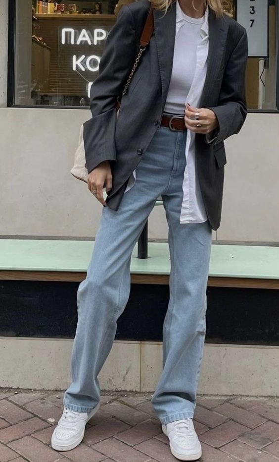

Yıla damgayı vuran 'Paris Moda Haftası'
2023 İlkbahar-Yaz koleksiyonlarının sergilendiği moda haftalarında sıra Paris’te. Moda dünyasının kalbinin attığı başkentlerden biri olan Paris’te podyuma çıkan defilelerde yeni sezona dair oldukça cesur detaylar ve elegan görünümleriyle büyüleyen tasarımlar var.
2023 Yılının Rengi 'Viva Magenta'
Pantone'un 2023 için sosyal,ekonomik,kültürel süreçleri göz önüne alarak seçtiği renk mor ve penbenin birleştiği Viva Magenta oldu. Pantone zekayı yansıtan cüretkar bir renk olduğunu söylemiş.Bu renge benzer
tonlarına örneğin kraliyet aile üyeleri gibi güçlü imaj sergileyen isimlerde sık sık rastlıyoruz.
Genelde kendi ile kombinlendiğini görsek de kırmızı,mavi,gri,kahverengi ve pembe gibi renkler ile berarber de görüyoruz.
'Douyin' Makyaj Trendi
Gün geçmiyor ki tiktok'ta yeni bir makyaj stili viral olmasın.Douyin makyajı ise Japonca'da "sevimli" anlamına gelen kawaii evreninden esinlenmiştir.
utangaçlığın etkisindeymiş gibi ultra pembe yanaklar, parlak dudakları ve parıltıyla süslenmiş meleksi yuvarlak gözleri ile Douyin it-girl,tatlılık
ve içtenlik enerjisi verir.
'Downtown Girl' Trendi
Downtown girl kalabalık bir şehrin ortasında yaşamın romantize edilmesinden türemiş bir stildir. Ana tema sonbahar,metro,kitaplar ile kitapçılardan,
kedilerden,kulaklıklardan, gitarlardan ve sokaklardan oluşmaktadır. Genellikle Lana Del Rey,Girl In Red,Radiohead,The Smiths,Mitski ve Arctic Monkeys
şarkıları bu estetiğin içerisinde önemli bir yer kaplar ve bu şarkılaarın ana karakteri enerjisi verir.Aklımızda daha da oturturabilmemiz için 10 things
I hate about you,gilmore girls karakterlerini kafamızda canlandırabiliriz.
Sonbahar İçin Dış Giyim Seçme Klavuzu

Victoria Beckham Gibi Giyinmek
Victoria Beckham'ın stil serüveni uzun ve değişimlerle dolu.90'lar Spice Girls zamanlarında süper mini elbise ve etekleri onun sitilini oluştursa da bu giyim stilinin ona dayatıldığını ve bundan kurtulmak için mücadele verdiğini söylüyor.Bu sebeple kendini ait hissettiği ve şu an tannındığı 2008 ve sonrası sofistike iş kadını stiline odaklanacağız.
2022/2023 Sonbahar Kış Ayakkabı Trendleri
Soğuk havalara hazırlanırken dolapları gözden geçirmenin vakti! Yeni sezonun kilit parçalarını derledik ve kaçırmamanız gereken Sonbahar-Kış sezonunun ayakkabı trendlerini inceledik.